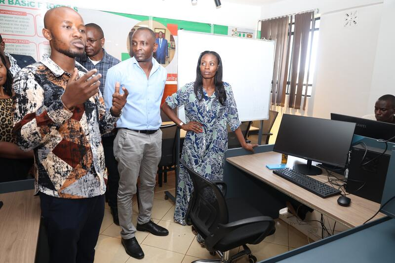

A school fee ledger with M-Pesa built in. Payments land, the books close themselves.

A bursar in a Kenyan school receives fees by M-Pesa. The payments arrive as text messages. Someone reads each one, finds the student, writes the amount into a book or a spreadsheet, and hopes the reference number was typed correctly. At the end of term the totals do not agree with the statement, and a week goes into finding out why.
The software that exists for this is either priced for institutions with a finance department, or it ignores M-Pesa entirely and expects bank transfers that nobody uses. So most schools keep the spreadsheet, and the spreadsheet keeps breaking.
The payment and the record should be the same event, not two events someone has to reconcile.
A parent pays through M-Pesa. EduLedger receives the callback, matches it to the student by registration number, posts it against the fee structure, and updates the balance. Nobody retypes anything. The bursar opens a dashboard and sees what came in today, who is overdue, and by how much.
EduLedger was built to serve more than one school. Each institution is provisioned with its own code, its own plan and its own student cap, and an admin console controls the lifecycle of every tenant from one place. The plans run from a hundred students to unlimited, and billing begins when the institution starts, not when the account is created.
The first institution is the Siaya Community Digital Hub, running a two-level programme structure with sixteen tracks and monthly intakes. Modelling a real programme with real students was the point. Anything that did not survive contact with an actual intake got rebuilt.
A Next.js front end and an Express API, both under PM2 on an Ubuntu server, with PostgreSQL behind Prisma. Deployment is a single script: push locally, pull on the server, build, restart. The school it serves sits behind carrier-grade NAT with no public address, so the service reaches the internet through a Cloudflare Tunnel rather than a port forward that would never have worked.
The product works for one school. The next step is the tenth. That means a billing settings page the institution controls itself, an M-Pesa configuration screen so a school can connect its own till without me touching a file, and a platform admin view that shows every tenant at once.
It is being taken to schools as a paid product rather than kept as an internal tool. The pricing already exists, the provisioning already works, and the reconciliation is the part nobody else is solving for a school this size.